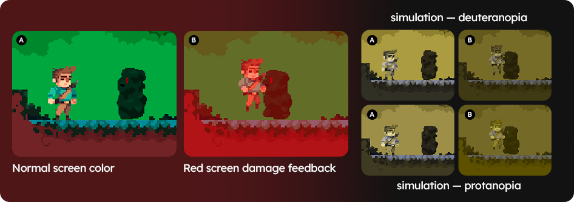

6. Keep an eye out for visual feedback and other elements that aren't always visible on the game screen
Digital games are interactive products and, often, parts of their interfaces are only displayed if the player makes certain choices or makes mistakes. It is important that all these small parts are chromatically accessible.
As designers and developers of the analyzed game, it is easier to know where and how to access all these corners of the interface and garantee that all possibilities are being analyzed.
PROBLEM SCENARIO
You usually test your games using color blindness simulations to look for color accessibility problems, however, you end up forgetting certain parts of the interface that are not always visible. For example, you were unable to identify an issue in visual feedback because it only appears when you lose a life.
We tested the identification of chromatic accessibility problems in a mobile game prototype and most of the problems that were not identified by participants were placed in visual feedbacks that were only displayed when players collected spoiled fruits or were attacked by an enemy (see image below). This was the case for both participants with color blindness and designer and developers with typical color vision (using color blindness simulations).
When bumping into an enemy, the player loses a life, the main character is pushed back and the screen turns red for a few seconds. Some participants in the group of designers and developers, because they had not bumped into the enemies, were unable to identify the feedback. During interviews conduted after the test, other participants claimed to “not have paid attention” to those parts of the interface. Meanwhile, participants with color blindness stated that they did not notice the color feedback, being able to identify the damage only because the main character is pushed backwards.
USE SCENARIO
You are analyzing a playable prototype of your mobile game with a color blindness simulation. In order not to forget any part of the game that needs to be analyzed, you and your team created a list. You start the analysis by playing the game freely and taking note of the problems you identify along the way. Then, you start to explore more specific parts of the interface that didn't come up in your previous games (e.g.: player defeat screen, powerups, damage visual feedback).
TIPS
- Even though you have already created and analyzed your game's assets using simulations, it is still worth testing again how colors behave in the context of a playable prototype. During gameplay, factors such as rush, animations and settings of the device used can generate new problems that did not appear previously.
- Create a list of interface elements that need to be checked for color accessibility. This list can be used during an inspection with color blindness simulations.
- Pay special attention to visual feedback. They are important resources for the player to understand what is happening during gameplay.
- When planing the test (both with simulations and with players), try to include success and failure scenarios so that all feedback is experienced.